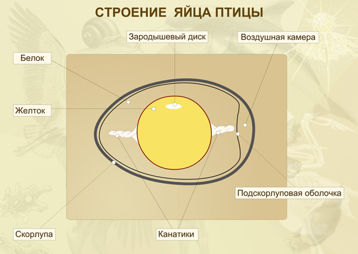
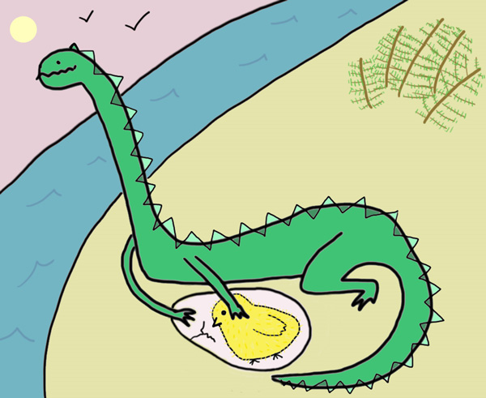

А всё потому, что все яйца более-менее похожи.
Не обязательно внешне: по внешнему виду можно спутать куриное яйцо с крокодильим, но никто, конечно, не спутает икринку лягушки или рыбы с куриным яйцом. Но по сути это одно и то же — оплодотворенные яйцеклетки.
Яйцеклетки по устройству в принципе похожи на обычные клетки. У них тоже есть ядро, цитоплазма и внешняя мембрана. Поверх нее почти всегда есть еще тонкая оболочка из белков. Но куриное яйцо гораздо крупнее обычной яйцеклетки и сложнее устроено. Диаметр обычной клетки — одна сотая или одна пятидесятая миллиметра. Диаметр яйцеклетки человека — около одной двадцатой миллиметра. Яйцеклетка лягушки — икринка — без оболочки имеет диаметр около одного миллиметра. Яйцеклетка курицы — это желток яйца. Ядра в ней не видно, потому что оно маленькое и прозрачное. А всё остальное, белок и скорлупа, — это сложно устроенные оболочки (рис. 3). Ими курица одевает свою яйцеклетку, чтобы защитить будущего цыпленка от высыхания, болезнетворных бактерий и прочих невзгод.
Кажется, некоторые люди до сих пор думают, что желток — это ядро яйцеклетки, белок — цитоплазма, а скорлупа — оболочка. Я как-то раз, лет пятнадцать назад, был свидетелем того, как это объяснял на уроке учитель биологии. В данном случае учитель был неправ! (Даже отчасти понятно, откуда ветер дует: геологи и географы злоупотребляют сравнением яйца с Землей: желток — ядро, белок — мантия, а скорлупа — земная кора.)
Строение яйца птицы
Как в ядре любой клетки, в ядре яйцеклетки содержится наследственная информация. Она записана на особых очень длинных молекулах (они называются ДНК). Что такое наследственная информация, в первом приближении можно объяснить даже тому, кто ничего не знает о молекулах. Это информация про то, как сделать из aяйца курицу или человека. Информация записана буквами в одну строчку. Длина этой записи у курицы — примерно два с половиной миллиарда букв. Разных букв у всех организмов всего четыре. И из них составляются слова только из трех букв. Из таких слов состоят фразы (они называются гены). Фразы довольно длинные. В них может быть и сто слов, и тысяча. Каждая фраза, если клетка её прочтет, превращается в белок — сложную молекулу-машинку.
- скорлупа
- белок
-
воздушная камера
- зародышевый диск
- подскарлуповая оболочка
- канатики
- желток
- зародышевый диск
Именно белки сокращают наши мышцы, переносят кислород от легких, укрепляют кости и хрящи, делают для нас всякие другие вещества. И от состава белков зависит цвет наших волос и глаз, форма носа и ушей, а во многом даже черты характера и интеллект. И вообще все наши признаки, в том числе и видовые различия между курицей, крокодилом и человеком.
Курица или человека
тело состоит из сотен миллиардов клеток, и все они происходят от яйцеклетки. Причем куриные клетки очень похожи на человеческие. Глядя на курицу и человека, догадаться об этом непросто! И в ядре каждой клетки у курицы и человека есть информация о целом организме.
Кажется, что сто миллиардов клеток — это очень много. Но на самом деле яйцеклетка и ее потомки могут делиться быстро — допустим, раз в час. Тогда через десять часов клеток будет уже примерно 1000 (2×2×2×2×2×2×2×2×2×2 = 1024). Через двадцать часов — миллион. Через тридцать — миллиард. Еще 5–6 часов — и нужное число достигнуто! Так что клеткам особенно можно и не спешить. Ведь на самом деле цыпленок развивается за 21 день.
Правда, если взять одну клетку курицы с ядром и посадить в питательную среду, то целую курицу таким способом не получишь (хотя с растениями этот номер проходит). Обычно клетки животных помнят, «кем они работали» в целом организме (см. Как клетки понимают, что одни должны стать волосами, другие костями, третьи мозгами и т. п.? И из какого центра им подаются команды?) и сохраняют свои свойства при размножении вне организма. Чтобы получить из обычной клетки целое животное, нужно извлечь из нее ядро и поместить его внутрь яйцеклетки (а ядро яйцеклетки убрать или разрушить). Тогда можно получить целый организм.
Тут уже до птиц было совсем недалеко
Все динозавры откладывали яйца, и некоторые их насиживали. Некоторые из динозавров, видимо, вообще были очень умными, могли опекать и воспитывать своих «цыплят». Они были почти такие же умные, как куры (а куры — вопреки распространенному о них мнению — очень умные и хитрые птицы). И наконец, у некоторых таких динозавров чуть-чуть поменялись гены, и чешуя на их теле постепенно превратилась в перья. А сами динозавры (точнее, некоторые из них) вовсе не вымерли — они превратились в птиц.
Таким образом, первое настоящее яйцо животных появилось, вероятно, больше 700 миллионов лет назад, а может, и больше миллиарда. Первые яйца динозавров, уже очень похожие на куриные, появились около 225 миллионов лет назад. А первые куры — более-менее близкие родственники современных кур — появились всего 90 миллионов лет назад. Вот насколько яйцо старше! А то, что первые яйца были не куриные, — так про это в вопросе и не спрашивается...